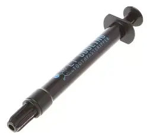

Ciência Térmica: Atingindo as temperaturas ideais

1. A Escolha da Pasta Térmica em 2026
Com as CPUs de nova geração alcançando picos de 95°C por design, as pastas térmicas genéricas tornaram-se obsoletas. Para evitar o thermal throttling, o ideal é utilizar interfaces térmicas com condutividade superior a 12.5 W/mK.
2. Water Coolers: O Perigo Silencioso
Sistemas de refrigeração líquida (AIO) não são eternos. Após cerca de 3 anos, ocorre o fenômeno da Permeação, onde o líquido evapora lentamente através das microporosidades das mangueiras.
Dica de Manutenção: Se notar ruídos de bolhas de ar vindos da bomba, o nível de fluido está baixo. Além disso, limpe o radiador a cada 3 meses para evitar o acúmulo de poeira nas aletas finas.
3. Delid e Metal Líquido
Embora ofereça a melhor transferência térmica disponível no mundo, o metal líquido exige precisão cirúrgica por ser condutor elétrico.